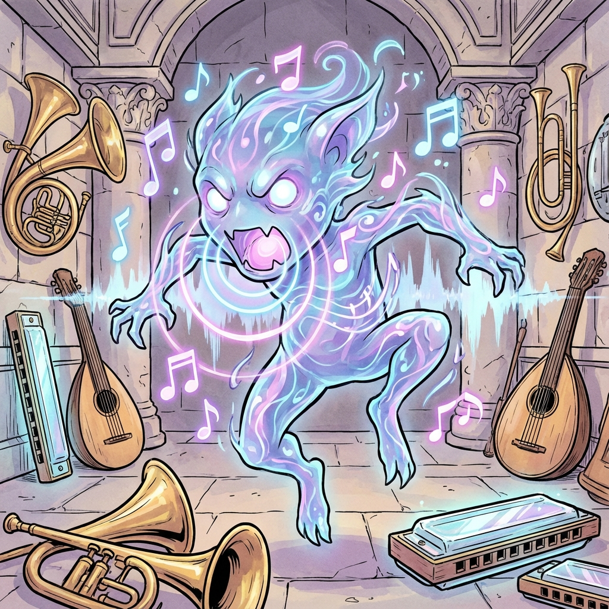

Melody Mephit
Harmony Essence Elemental
Type: Small Elemental (Neutral)
CR: 1/2 (100 XP)
Description
A pastel swirl of colored sound waves. Its form hums with gentle chords, drifting like a dancer. Every movement leaves sparkling motes and faint echoes behind. These mephits manifest when Harmony Essence is disrupted, appearing in concert halls and places of musical magic.
Stat Block
Armor Class: 11
Hit Points: 19 (5d6-5)
Speed: 30 ft., fly 30 ft.
STR8 (-1)
DEX12 (+1)
CON8 (-1)
INT10 (+0)
WIS10 (+0)
CHA14 (+2)
**Damage Resistances:** Thunder; Bludgeoning, Piercing, and Slashing from nonmagical attacks
**Condition Immunities:** Deafened
**Senses:** Darkvision 60 ft., passive Perception 10
**Languages:** Auran, Aquan (understands but can't speak)
**Condition Immunities:** Deafened
**Senses:** Darkvision 60 ft., passive Perception 10
**Languages:** Auran, Aquan (understands but can't speak)
Abilities & Actions
Harmonic Aura: Creatures within 10 ft. of the mephit have disadvantage on Charisma (Deception) checks due to the mephit's resonating hum.
Sonic Strike (Ranged Attack):
The mephit releases a focused burst of discordant sound.
*Ranged Weapon Attack:* +4 to hit, range 30/60 ft., one target
*Hit:* 5 (1d6 + 2) thunder damage
Resonant Pulse (Action):
The mephit emits a 15-foot sphere of harmonic energy (centered on itself). Each creature in the area makes a Charisma save (DC 13) or takes 5 (2d4) thunder damage and must drop any held item or lose concentration on a spell. On a success, half damage and no extra effect.
Discordant Duet (Bonus Action; Recharge 5-6):
The mephit conjures a harmonic echo that sings out of key. Enemies within 10 ft. have disadvantage on Perception checks and spell attack rolls for 1 round. Allies can use verbal communication (e.g., the Help action) from 10 ft. further away, as the mephit's supportive resonance amplifies calls.
Harmony Chain (Reaction):
If there is another Melody Mephit or an allied "musical" entity nearby, they can chain their energies. When an ally hits a creature with an attack, the mephit spends its reaction to cause psychic feedback, dealing an extra 3 (1d6) thunder or psychic damage.
Sonic Strike (Ranged Attack):
The mephit releases a focused burst of discordant sound.
*Ranged Weapon Attack:* +4 to hit, range 30/60 ft., one target
*Hit:* 5 (1d6 + 2) thunder damage
Resonant Pulse (Action):
The mephit emits a 15-foot sphere of harmonic energy (centered on itself). Each creature in the area makes a Charisma save (DC 13) or takes 5 (2d4) thunder damage and must drop any held item or lose concentration on a spell. On a success, half damage and no extra effect.
Discordant Duet (Bonus Action; Recharge 5-6):
The mephit conjures a harmonic echo that sings out of key. Enemies within 10 ft. have disadvantage on Perception checks and spell attack rolls for 1 round. Allies can use verbal communication (e.g., the Help action) from 10 ft. further away, as the mephit's supportive resonance amplifies calls.
Harmony Chain (Reaction):
If there is another Melody Mephit or an allied "musical" entity nearby, they can chain their energies. When an ally hits a creature with an attack, the mephit spends its reaction to cause psychic feedback, dealing an extra 3 (1d6) thunder or psychic damage.
Combat Tactics
**Eerie & Mesmerizing:** Attempts to subdue enemies with dissonant chords rather than raw violence.
**Tactical Approach:** Uses Resonant Pulse to break concentration and force weapon drops, then follows up with Sonic Strike. Discordant Duet disrupts enemy coordination while aiding allies.
**Environment:** Found in concert halls, music chambers, or areas where Harmony Essence has been corrupted.
**Tactical Approach:** Uses Resonant Pulse to break concentration and force weapon drops, then follows up with Sonic Strike. Discordant Duet disrupts enemy coordination while aiding allies.
**Environment:** Found in concert halls, music chambers, or areas where Harmony Essence has been corrupted.